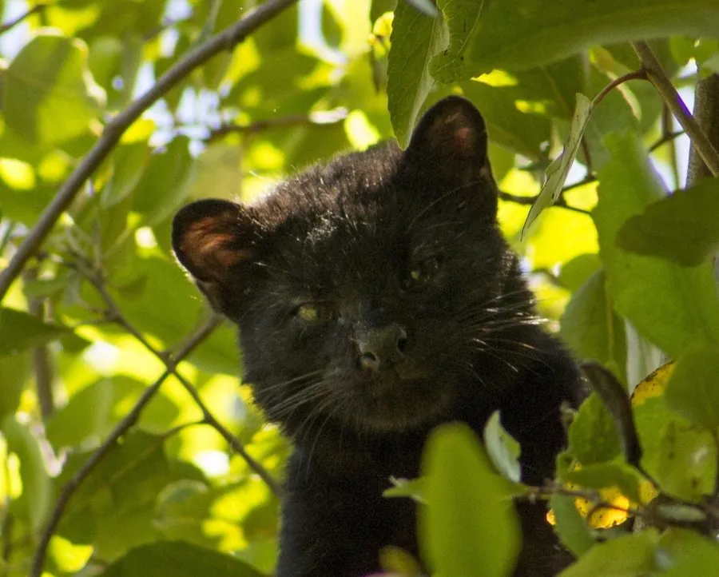

哺乳动物 · 动物界
南美林猫 Leopardus guigna

美洲体型最小的猫类之一，仅分布于智利与阿根廷的温带森林，毛色斑纹细密，尾粗，夜行独居，栖息地正被人工林不断蚕食。
- 分类
- 门脊索动物门纲哺乳纲目食肉目科猫科属虎猫属
- 栖息环境
- 温带雨林、灌丛、针叶林与农林交错带
- 地理分布
- 智利中部至南部及阿根廷西南部的狭长地带
- 保护级别
- IUCN 易危（VU）；CITES 附录Ⅱ
物种志
南美林猫体长 37–51 cm，尾长 20–25 cm，体重约 1.5–3 kg，是美洲最小的猫科动物之一。毛色黄褐至灰褐，全身布满细小的黑色斑点，尾粗而带环纹，头小眼大，四肢较短，脚掌宽大，善攀爬。
它们分布于智利中部和南部以及阿根廷西南部的温带雨林、灌丛和针叶林，多在夜间单独活动，白天藏在岩石缝或密枝间休息。食物以小型啮齿类为主，也捕食鸟类、蜥蜴、昆虫和腐肉。妊娠期约 72–78 天，每胎 1–3 仔。人工林扩张、道路和犬类传播疾病使栖息地日益破碎，被列为易危物种。
形态与习性
- 食性小型啮齿类、鸟类、蜥蜴、昆虫与腐肉
- 体长37–51 cm，尾长 20–25 cm
- 体重约 1.5–3 kg
- 繁殖妊娠期约 72–78 天，每胎 1–3 仔
- 活动节律夜行性，独居，善攀爬
- 特点美洲最小的猫类之一，尾粗且带环纹
趣味知识
- 南美林猫是美洲体型最小的猫科动物之一，体重通常不到 3 kg。
- 它的分布范围极其狭长，几乎完全局限在智利和阿根廷的温带森林带。
- 南美林猫常在夜间沿树枝活动，捕食小型啮齿类和鸟类。